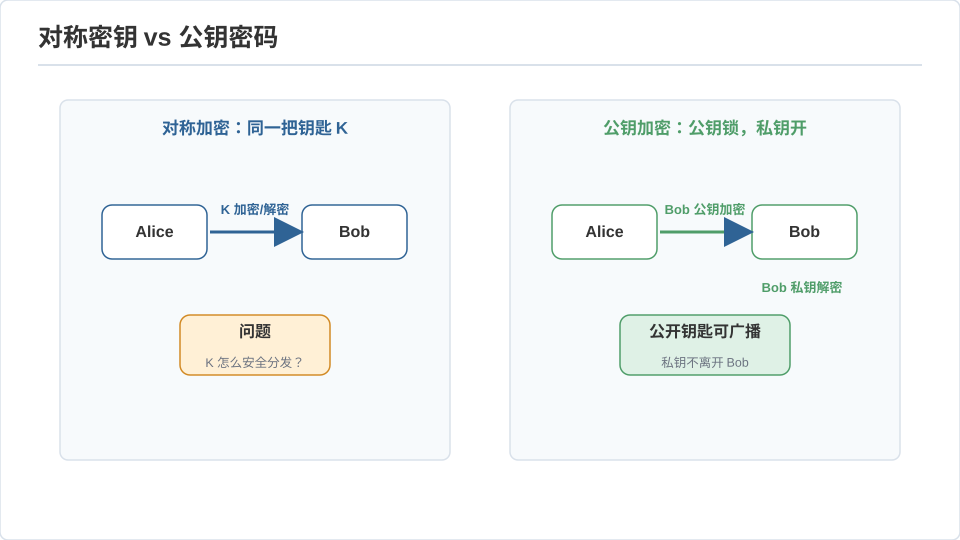
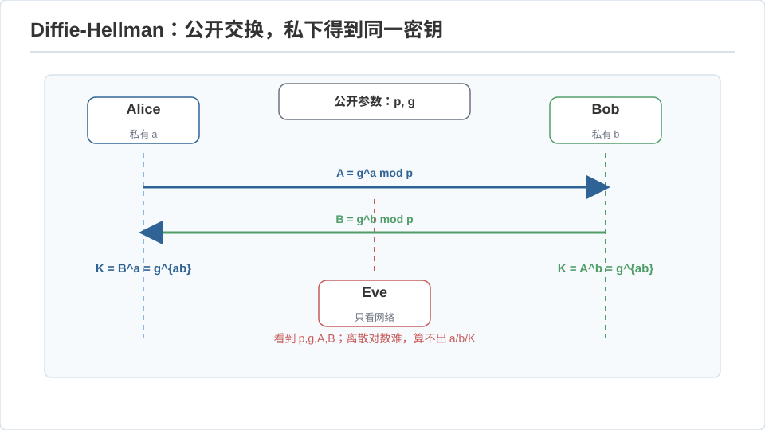
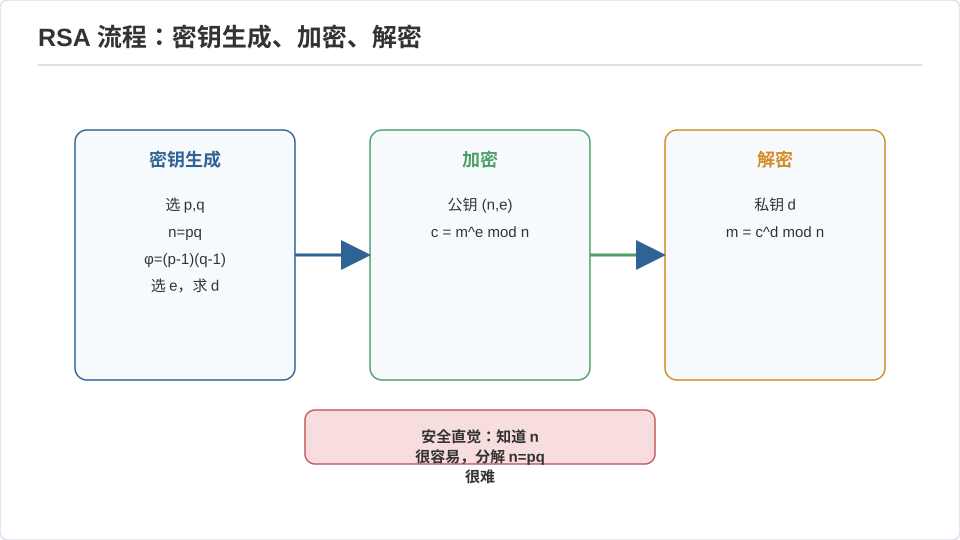

密码学 I · 对称、公钥与数论基础
对标：Boneh–Shoup A Graduate Course in Applied Cryptography / Katz–Lindell ｜ 前置：toc-02（难度即安全）、数学站数论/代数（群、模运算） 密码学是把复杂度理论的"难"锻造成"安全"的工程。这一页从"安全到底指什么"（可证明安全的定义哲学）讲起，过对称加密、走到公钥革命，落到 RSA/ECC 依赖的数论难题。对有代数底子的你，这一页大半是"群论 + 数论的应用题"，但安全定义那部分是全新的思维方式，值得慢读。
1. 安全的定义：从"看起来乱"到可证明
业余者问"这密码强吗"，密码学家问"在什么攻击模型下、归约到什么难题、优势有多小"。核心范式：
- Kerckhoffs 原则：算法公开，安全只依赖密钥——"隐藏算法"（security through obscurity）不是安全。
- 语义安全 / IND-CPA：定义安全为一个游戏——攻击者选两条明文、拿到其一的密文，若他区分不出是哪条（优势可忽略），就叫安全。"安全 = 密文不泄露明文的任何比特"被形式化成不可区分性。
- 可证明安全 = 归约：证"破解我的方案 ⇒ 解开某个公认难题（分解、离散对数）"。于是安全性有了和 NP 归约同构的骨架（🔗 toc-02、algo-03）——密码学是"我们希望 \(P\ne NP\) 的那一面"的建设性运用。
一次一密（OTP）：密钥与明文一样长、真随机、异或——信息论完美保密（Shannon 证明：密文与明文独立，🔗 信息论线）。但密钥太长不实用 ⇒ 现代密码用计算安全（伪随机替代真随机）换实用性。这个"信息论安全 → 计算安全"的退让是整个现代密码学的起点。
2. 对称加密与它的工具箱
双方共享密钥 \(k\)。
- 分组密码（AES）：把 128 比特块在密钥控制下做多轮"混淆 + 扩散"的置换——设计目标是伪随机置换（PRP）：无密钥时与随机置换不可区分。硬件加速、极快。
- 工作模式：分组密码要配模式才能加长消息。ECB 禁用（相同明文块 → 相同密文块，泄露模式，著名的"ECB 企鹅图"）；用 CTR / GCM（把分组密码当伪随机流、异或明文，GCM 还带认证）。
- 认证与完整性：加密防偷看，不防篡改。要 MAC（HMAC）或 AEAD（AES-GCM 一次给机密 + 完整性）。铁律：Encrypt-then-MAC，永远认证密文——"只加密不认证"是真实世界无数漏洞的根源（padding oracle 攻击）。
- 哈希函数（SHA-256）：任意输入 → 定长摘要，要求抗原像 / 抗第二原像 / 抗碰撞（MD5、SHA-1 已被碰撞攻破，勿用）。哈希是密码学的螺丝钉：口令存储（加盐 + 慢哈希 bcrypt/Argon2）、完整性、承诺、Merkle 树（区块链、Git 的对象名，🔗 se-01）。
方法论：不要自己发明密码原语——用久经审查的标准库（libsodium）。密码学的失败几乎全在误用（重用 nonce、自制协议、忽略认证），不在算法本身。这条工程纪律比任何公式都重要。
3. 公钥革命：不共享秘密也能加密
对称加密的死结：通信前怎么安全地交换密钥？ 1976 年 Diffie–Hellman 破局——公钥密码：每人一对公钥（公开）/ 私钥（自留）。

Diffie–Hellman 密钥交换【推导级】：公开大素数 \(p\) 与生成元 \(g\)。Alice 选私密 \(a\)、发 \(g^a\bmod p\)；Bob 选 \(b\)、发 \(g^b\)。双方各自计算 \((g^b)^a = (g^a)^b = g^{ab}\bmod p\)，得到同一个共享密钥。窃听者看到 \(g,g^a,g^b\) 却算不出 \(g^{ab}\)——这就是计算 Diffie–Hellman 难题，其硬度依托离散对数难题（DL）：知道 \(g^a\) 反求 \(a\) 在合适的群里没有已知高效算法。\(\blacksquare\) 妙处：两人在公开信道上，凭各自的秘密，凭空生成了共享秘密。

4. RSA 与椭圆曲线：数论难题当地基
RSA【推导级】：取两大素数 \(p,q\)、\(N=pq\)、\(\varphi(N)=(p-1)(q-1)\)。选公钥 \(e\)，私钥 \(d\equiv e^{-1}\pmod{\varphi(N)}\)。加密 \(c=m^e\bmod N\)，解密 \(m=c^d\bmod N\)。正确性靠欧拉定理：\(m^{ed} = m^{1+k\varphi(N)}\equiv m\pmod N\)（🔗 数学站数论——费马小定理/欧拉定理直接上岗）。安全靠分解难：知道 \(p,q\) 就能算 \(\varphi\) 进而 \(d\)；而大整数分解没有已知多项式算法（NP-中间的疑似居民，toc-02）。

椭圆曲线（ECC）：把群从 \((\mathbb Z/p)^*\) 换成椭圆曲线上的点群，离散对数在曲线群上更难 ⇒ 同等安全下密钥短得多（256 位 ECC ≈ 3072 位 RSA）。移动端、TLS 现代套件的主力。数学上是"换一个离散对数难的群"，密码框架不变——再次印证密码学的模块化：难题可替换，协议骨架不变。
5. 练习与要点
例 1（DH 手算） \(p=23,g=5\)，Alice \(a=6\)、Bob \(b=15\)：算 \(g^a=8\)、\(g^b=19\)、共享 \(g^{ab}=2\)——在小数字上亲手跑一遍公钥交换，"凭空造共享秘密"的魔法就不神秘了。
例 2（为什么要认证） 演示比特翻转攻击：CTR 模式下改密文某比特 = 改明文对应比特，无认证则接收方察觉不到——"加密 ≠ 安全，缺了认证就是漏洞"用一次异或说清。
例 3（RSA 的脆点不在数学） 教科书 RSA（无填充）有可乘性 \(c_1c_2 = (m_1m_2)^e\) 泄露结构、且确定性加密不 IND-CPA ⇒ 实务必用 OAEP 填充。"正确的数学 + 错误的用法 = 不安全"是密码学的永恒教训。\(\blacksquare\)
下一页：密码学 II——协议、零知识证明与后量子：从两个人的加密到互不信任的多方，以及量子计算机来了怎么办。